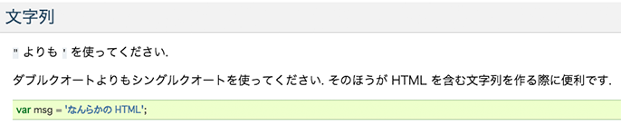
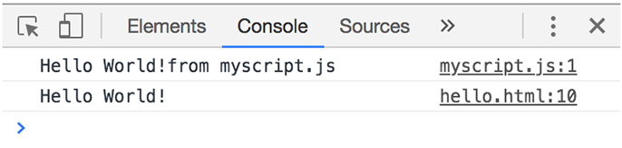
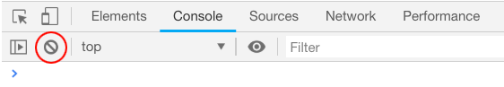

書き方のルール
- 基本的に「半角英数字と記号のみ」を使う
- 文字列を扱う場合は「シングルクォート」か「ダブルクォート」で囲む
- 大文字と小文字は区別される
- 命令文の末尾には「セミコロン」をつける
- 複数行にわたるまとまりの命令文は「{}波括弧」で囲む（囲まれた範囲をブロックと呼ぶ）
記述する場所
- </head>の前（内部参照）
- </body>の前（内部参照）
- 外部JavaScriptファイル（外部参照）
scriptタグ内に記述（内部参照の場合）
<!DOCTYPE html> <html lang="ja"> <head> <meta charset="UTF-8"> <title>JavaScript</title> </head> <body> <script> </script> </body> </html>
文字列を出力
Hello World
- 文字列の出力
- コンソールに出力（ console.log(); ）
Google JavaScript Style Guide 和訳

文字コード
《hello.html》
<!DOCTYPE html> <html lang="ja"> <head> <meta charset="UTF-8"> <title>Hello World!</title> </head> <body> <script> console.log('Hello World!'); </script> </body> </html>
外部ファイル参照
《myscript.js》
console.log('Hello World!from myscript.js');
《hello.html》
<!DOCTYPE html> <html lang="ja"> <head> <meta charset="UTF-8"> <title>Hello World!</title> </head> <body> <script src="myscript.js"></script> <script> console.log('Hello World!'); </script> </body> </html>

コメント
- コード自体を消さずに、一時的に無効にする
- 用途
- デバッグ（バグの発見と修正）
- プログラムに説明を書く
コメント文（１行 / 複数行）
// １行だけコメントアウト /* 複数行 コメントアウト したいとき */
Chromeのconsoleを使う
- console.log()
- コンソールに出力（ console.log(); ）
コンソールの使い方
- 「検証」→「Console」を選択
- 記述されているコードをクリアにする

出力例
四則演算
- 演算子（operator）の前後は「半角スペース」を空ける
// 5と3を足した値を出力 console.log(5 + 3); // 20から8を引いた値を出力 console.log(20 - 8); // "4 + 5" を文字列として出力 console.log('4 + 5'); // 8と4をかけた結果を出力 console.log(8 * 4); // 24を4で割った結果を出力 console.log(24 / 4); // 7を2で割った余りを出力 console.log(7 % 2);
consoleを表示
- Win（ ctrl + shif + c ）
- Mac（ command + option + i ）
consoleの内容をクリア
- Win（ ctrl + l ）
- Mac（ command +k ）
consoleに出力
- console.log()
コンソールで複数行のプログラムを書く
- コンソール内で「改行」するためには、「Shift+Enter」を行う